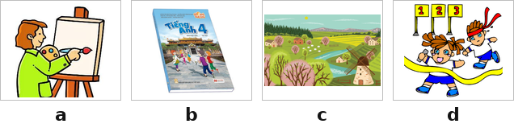
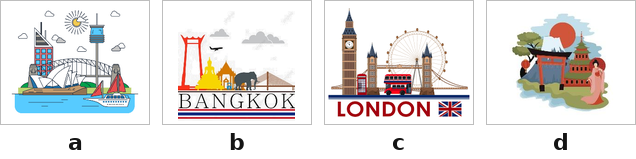
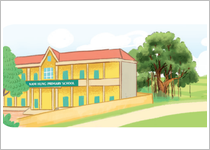
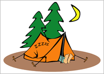
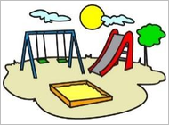
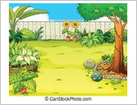
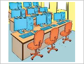

Monday is my favourite day! Here is what I usually do. I get up, eat my breakfast and go to school at half past seven. I usually take a bus, but sometimes I ride my bike. I like Mondays because we have English. It’s my favourite subject! I always eat lunch at the school canteen. In the afternoon, I have music and maths. They are interesting! Then I go home and do my homework. Then I watch TV with my dad before having dinner.
Hello, my name is Sarah. I am ten years old. I’m from (1) ______ I study in a school in London. There is a big (2) ______ at my school. My favourite subject is (3) ______ I also like computers a lot! There are two (4) ______ where we learn IT every Wednesday. After school, I often go for a walk in the park with my friends.


Nhập thông tin để hệ thống ghi nhận kết quả.
Bạn có thêm 5 phút để hoàn tất. Hết 5 phút bài sẽ tự động nộp.
Hành vi này đã được ghi nhận. Hãy quay lại chế độ toàn màn hình để tiếp tục làm bài.